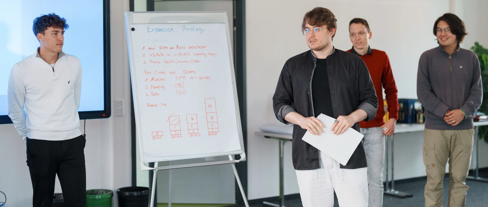

Für Studierende
Consult One ist die studentische Unternehmensberatung im Großraum Braunschweig, gegründet 2002 an der TU Braunschweig. Bei uns sammelst du schon im ersten Semester echte Projekterfahrung, durchläufst eine steile Lernkurve und baust dir ein Netzwerk auf, das über dein Studium hinaus trägt.
Anstehende Termine
Am einfachsten lernst du uns persönlich kennen: bei einer Infoveranstaltung, unserem offenen Wochentreffen oder beim Women's Brunch.
Aktuell steht kein neuer Termin fest. Schreib uns trotzdem gern über unser Bewerbungsformular.
Dein Mehrwert als Mitglied
Bei Consult One sammelst du praktische Beratungserfahrung, die du im Studium so nicht bekommst. Dazu kommen Kontakte, die dir nach deinem Abschluss weiterhelfen.
Echte Projekterfahrung
Du arbeitest an realen Projekten für echte Unternehmen, von regionalen Mittelständlern bis zu internationalen Konzernen. Und zwar an Fragestellungen, bei denen deine Arbeit am Ende tatsächlich etwas bewirkt.
Sprungbrett für deine Karriere
Viele unserer Mitglieder starten später bei großen Unternehmensberatungen, übernehmen Führungsaufgaben im Management oder gründen ihr eigenes Startup.
Strukturierte Anwartschaft
In deinem ersten halben Jahr durchläufst du Schulungen zu Projektmanagement, Präsentation, Verhandlung und Beratungsmethodik.
Starkes Netzwerk
Über 400 Alumni, unser Partnernetzwerk aus der Wirtschaft und drei nationale Netzwerke stehen dir offen. An solche Kontakte kommst du im Studium sonst kaum.
Workshops & Weiterbildung
In internen Schulungen und Workshops mit Unternehmen lernst du Dinge, die im Studium kaum vorkommen: strukturiert präsentieren, Meetings moderieren, ein Problem sauber aufdröseln.
Gemeinschaft & Events
Gemeinsame Ausflüge, Teamevents und Veranstaltungen gehören bei uns fest dazu. Viele bleiben auch nach dem Studium in Kontakt.
Das lernst du
Neue Mitglieder durchlaufen im ersten halben Jahr eine gezielte Anwartschaft, die sie zu kompetenten studentischen Berater:innen macht.
Du übernimmst von Anfang an Verantwortung in echten Kundenprojekten: von der Angebotserstellung über die Zeitplanung bis zur Abschlusspräsentation. Erfahrene Mitglieder, die genau diesen Weg selbst gegangen sind, begleiten dich dabei.

Dein Einstieg
Du bringst diese Voraussetzungen mit? Perfekt.
Dein Weg zu Consult One
Der Bewerbungsprozess ist unkompliziert und dauert nur wenige Wochen.
Kennenlerngespräch
Wir laden dich zu einem lockeren Gespräch ein, in dem wir uns gegenseitig kennenlernen.
Aufnahme & Start
Wenn es für beide Seiten passt, startest du direkt in dein erstes Projekt bei echten Kunden.
Häufige Fragen von Studierenden
Wer kann sich bei Consult One bewerben?
Bewerben kann sich, wer an einer Hochschule eingeschrieben ist, unabhängig von Studienfach oder Hochschule. Ein späteres Auslandssemester oder Pflichtpraktikum ist kein Problem. Wenn du insgesamt weniger als zwei Semester bei uns bleiben könntest, zum Beispiel weil du gerade nur für ein Austauschsemester hier bist oder direkt nach dem Einstieg ins Ausland gehst, lohnt sich die Einarbeitung für beide Seiten nicht mehr.
Ab welchem Semester kann ich einsteigen?
Ein Einstieg ist bereits ab dem ersten Semester möglich. Wichtig ist uns, dass du danach noch mindestens zwei Semester dabeibleiben kannst. Wenn du kurz vor dem Berufseinstieg stehst, lohnt sich die Einarbeitung für beide Seiten nicht mehr.
Wie viel Zeit muss ich investieren?
Im ersten Semester solltest du 10–15 Stunden pro Woche für Consult One einplanen, für Projekte, wöchentliche Ressort- und Vereinstreffen und Schulungen. Danach hängt es davon ab, wie viel du machen willst: viele Kundenprojekte, eine Ressortleitung oder erstmal etwas ruhiger.
Ist die Mitgliedschaft bei Consult One bezahlt?
Die Mitarbeit im Verein ist ehrenamtlich und wird von allen Mitgliedern erwartet. Nach erfolgreichem Abschluss der Anwartschaft besteht die Möglichkeit, bezahlte Kundenprojekte zu übernehmen.
Kostet die Mitgliedschaft bei Consult One etwas?
Ein kleiner Mitgliedsbeitrag fällt erst an, nachdem du dein erstes Projekt abgeschlossen hast. Bis dahin kostet dich die Mitgliedschaft nichts.
Wie läuft der Bewerbungsprozess ab?
In drei Schritten: Du füllst unser Bewerbungsformular aus, wir laden dich zu einem persönlichen Kennenlerngespräch ein, und wenn es für beide Seiten passt, startest du direkt in dein erstes Projekt bei echten Kunden.
Bietet ihr Praktika oder Werkstudierendenstellen an?
Nein. Consult One ist ein eingetragener, ehrenamtlich geführter Studierendenverein und kein Unternehmen mit Angestellten. Wir vergeben deshalb keine Praktikums- oder Werkstudierendenstellen. Dafür ist Consult One bei vielen Unternehmen bekannt, was sich als Pluspunkt in deiner Bewerbung auszahlt, und du baust dir bei uns ganz nebenbei ein gutes Netzwerk in die Wirtschaft auf.
Fragen zur Bewerbung?
Du hast Fragen zum Einstieg bei Consult One? Unser Ressort Personal & Organisation beantwortet sie dir gern. Für die Bewerbung selbst nutzt du bitte unser Formular.
Frage stellenRessortleitung Personal & Organisation
Tobias Mieth
Ressortleitung Personal & Organisation